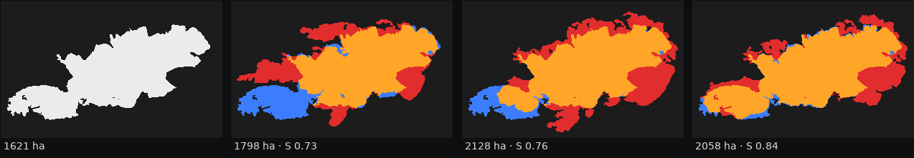

Só em 2026 arderam em espaço rural
≈ três concelhos de Guimarães.
Nesses minutos, cada entidade olha para o seu ecrã — e os mapas mostram o que já ardeu.
Uma simulação do incêndio para quem decide — enquanto ainda há tempo.
Vento, humidade, combustível e relevo daquele dia, a partir do perímetro observado.
Viaturas reais dos quartéis do distrito, colocadas à mão por quem comanda ou propostas pelo sistema · se o ILS entrar.
O incêndio corre com os meios no terreno, em [N] s.

| Ferramenta | Mostra | Testa os seus meios |
|---|---|---|
| fogos.pt | Ocorrências ativas e meios empenhados | — |
| IPMA · EFFIS | Risco do dia, índice meteorológico | — |
| Copernicus EMS | O que ardeu, horas ou dias depois | — |
| incendiosportugal.pt | Previsão de propagação, como se ninguém atuasse | — |
| Atalaia | O que vai arder com os meios que colocar, num mapa comum | Sim |
Este ano arderam três Guimarães.
Da próxima vez, quem decide vê o que vai arder — para cada decisão — antes de enviar os meios.
Incêndios observados: PT-FireSprd v1, Benali et al., Earth System Science Data, 2023.
Registos oficiais: ICNF, SGIF; perímetros GNR/GTF; relatório provisório RIF05/2016.
Satélite: "We acknowledge the use of data and imagery from LANCE FIRMS operated by NASA's Earth Science Data and Information System (ESDIS)".
Motor de propagação: ELMFIRE, Chris Lautenberger (EPL 2.0). SimFire 2.0.1 como alternativa.
Combustíveis: Fernandes et al. (2009), Modelos de combustível florestal para Portugal; parâmetros de Paixão (2017); COS2015 (DGT).
Relevo e copas: Copernicus DEM GLO-30; LiDAR nacional da DGT (MDS/MDT 2 m).
Meteorologia: ERA5 via Open-Meteo; CERRA (Copernicus).
Meios: Matos (2025), tese de doutoramento, Universidade do Minho, hdl 1822/97938 (CC BY-NC-SA 4.0); INE; CAOP2025 (DGT, CC BY 4.0).
Otimização: Mendes & Alvelos (2023), European Journal of Operational Research 304(3). só se o ILS entrar
Mapa e dados vetoriais: CesiumJS e Cesium ion; © contribuidores do OpenStreetMap (ODbL).
Apresentação: reveal.js (MIT).
IA: assistentes de programação (Claude, Anthropic) usados no código e nos documentos, como as regras pedem.